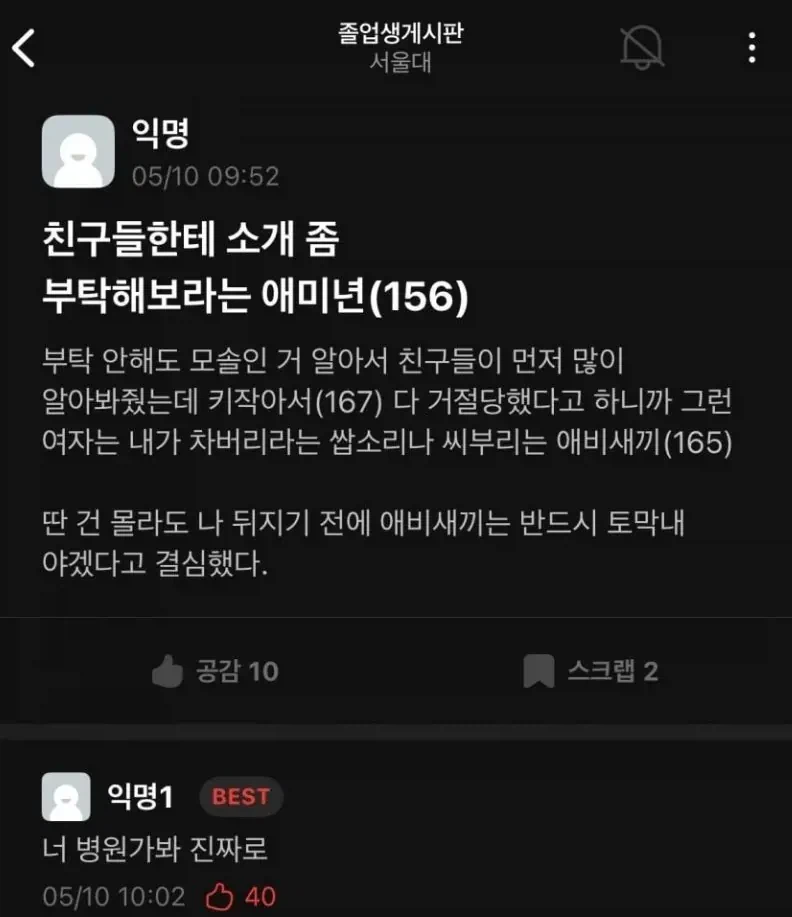

키작아서 연애못한다는 서울대생
댓글
내친구 163인데 이쁜여자랑 결혼함
키만작은게 아니라 키도 작은거겠지..
167이면 키문제가 아닌데...
키 핑계대고 있네 키도 좆만한거지 ㅋㅋ
167정도면 그래도 비빌 수는 있을텐데 키보다는 마음이 망가진 친구인듯
키작으면 존나 불리하긴 하지
얼굴이 문제임 인정하기싫으니 다른핑계
160초반에 결혼한 형 있어서 167이면 노력 좀 해라 서울대인데
개못생겨서 핑계대는거
전청조 155
아버지는 그키로 결혼했는데 ㅉㅉ 병신
연애 한 번 해보려고 백날 노오력해도 남자의 연애 가능성은 사실상 키로만 결정되고, 그 키는 부모한테 100% 물려받는다는 진실을 알면 저렇게 안 되기도 힘들지 ㅋㅋㅋㅋㅋ
나도 키작은데 인생 살면서 솔로였던 기간보다 연애를 한 기간이 더 길어졌고 곧 결혼도함 서울대면 학부일때는 그 학벌로만 어필해도 굉장히 우월할텐데
댓글에 조롱하는 분위기만 봐도 키작은건 진짜 지옥이구나...저런 분위기에서 모나지 않은 성격 갖추는게 더 어려울듯
??: 키작아도 성격 나쁘지 않으면 괜찮다!
(여장이나 하라고 조롱하며)
뒤지기 무서우니까 목숨줄만 붙잡고 있는 거지 세상에서 제일 사는 의미가 없는게 키작남임
키도 작은거 같은데..저런 애들은 키 커도 정상적으로 연애 못함
아. 나도 했는데 넌 왜 못하냐고.
나도 167인데 지금까지 연애를 쉬어본 적이 없음. 저건 키 문제가 아닌것 같은데
ㅇㅈ 나도 좆만이인데 연애 소개팅 개많이함. 저건 못생긴 얼굴+마음가짐 종합선물세트인듯
서울대갈 대가리면 로스쿨이라도 가지 키작아도 전문직은 소개팅 성사되더라
167이면 해볼만해
진짜 작은애들은 남자인데 162 이래... 이런애들도 노력한다